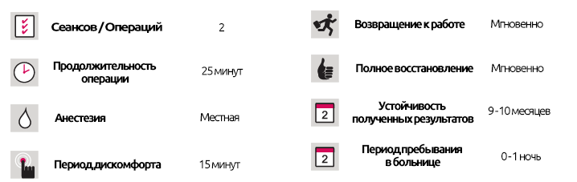

Дермальные филлеры
Дермальные филлеры
КРАТКОЕ ОПИСАНИЕ ЛЕЧЕНИЯ
Наполнители используются для увеличения объема любой части тела (лица, рук, спины и носа и т. д.), заполнения кожных складок и морщин и наполнения губ. Постоянство наполнителей зависит от используемого продукта, но в среднем можно сказать 6-12 месяцев (4-6 месяцев для губ). Существуют более долговечные наполнители с использованием синтетических материалов.
Сегодня наполнители можно разделить на 3 категории:
- Непостоянный (менее 1 года)
- Полупостоянный (между 1-2 годами)
- Постоянный (более 2 лет)
Наиболее часто используемые наполнители содержат гиалуроновую кислоту. Влагоудерживающая характеристика этой кислоты увеличивает объем кожи, но со временем усваивается организмом, снижая ее воздействие. Устойчивость этой процедуры составляет от 6 до 12 месяцев и может использоваться на любой части лица и рук. Фактический тип используемого наполнителя гиалуроновой кислоты зависит от площади тела и степени потери объема. Для краев глаз и губ наполнители с высокой текучестью, для линий лба и слабых складок в пространстве между бровями и в промежутке между нижними углами носа и углами губ наполнители с низкой текучестью и для сильных складок в пространство между нижними углами носа и уголками губ, а также для формирования лица используются наиболее концентрированные наполнители.
На каких частях тела можно использовать наполнители?
Наполнители используются на губах для заполнения линий, простирающихся от носа до губ, линий над губами, скул и щек, линий между бровями и для наполнения губ.
Анестетик наносится на область с помощью кремов или инъекций до начала процедуры. По истечении определенного периода времени кожа очищается антисептиком, а затем используются инъекции наполнителя. В зависимости от глубины линий и складок на одном и том же человеке можно использовать более одного типа наполнителя. Для разглаживания более глубоких складок можно добиться успешных результатов, если повторить процедуру через 3 месяца. В течение 3 дней после процедуры следует избегать интенсивной физической нагрузки, массажа и очень горячих/холодных мест (до исчезновения отека и покраснения). На следующий день можно использовать средства по уходу за кожей. Могут появится побочные эффекты, такие как покраснение, отек и кровоподтеки.
Процедура вызывает боль?
Пациент не испытывает никакой боли, поскольку заранее был нанесен анестезирующий крем или местный анестетик.
Легкий наполнитель
Легкие наполнители - это новый метод мезотерапии и наполнителей, который возвращает коже способность отражать свет. Это простая, но эффективная процедура, выполняемая один раз в неделю, всего в 3 сеанса. Результаты, видимые невооруженным глазом, становятся очевидными после первой инъекции, а также кумулятивных сеансов.
Филлеры тыльной стороны кисти
В настоящее время существует решение для признаков старения, таких как пятна, потеря ткани и все более заметные вены на тыльной стороне кисти.
Кому можно делать наполнители на кисти?
Целью омоложения рук является замена подкожной клетчатки, повышение качества истонченной и потертой кожи и удаление пятен. Наполнители можно использовать для заполнения подкожного слоя кожи на тыльной стороне кисти. Для улучшения качества кожи и ее увлажнения используются чистая гиалуроновая кислота и PRP. Пятна на коже удаляются химическим пилингом или истиранием.